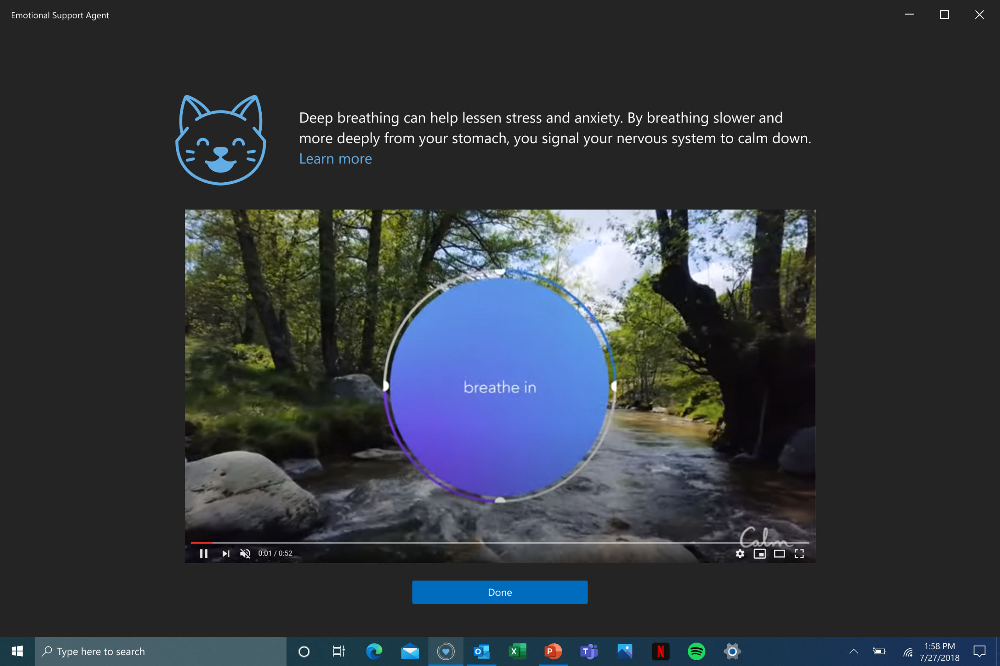

Mental health problems are the leading cause of disability worldwide, affecting over 1 billion people. Moreover, workplace stress is the number one source of stress for American adulsts, costing the U.S. economy $300 billion annually. Both these issues were exacerbated by the COVID-19 pandemic. Esa was a low-cost, intelligent stress-reduction application to address unmet mental health needs and lower workplace stress.
I developed the vision and roadmap for Esa, leading a cross-organizational team of 16 members to build the application and partnering with Microsoft Research's Human Understanding and Empathy (HUE) group. To iterate on and validate the design, I conducted 9 semi-structured interviews with neurodiverse users. I also produced the above pitch video to publicize the project.
Esa originated from my lived experiences with anxiety and depression and was inspired by my emotional support animal, Sasha. Through therapy, I learned that emotional awareness, including mindfulness of stress, is integral to managing my mental health. To that end, I searched high and low for a financially accessible wearable with accurate stress detection, but struggled to find one. When I learned that the HUE group could detect emotions with only a laptop, I leaped at the opportunity to build a low-cost solution for a general audience.
Esa was designed to serve three main functions:
1. Detect user stress- Esa leveraged the HUE group's prior research on affective computing to detect user emotion from passive laptop sensors. Data was collected every second from camera, microphone, and application activity to calculate a stress score.
2. Deliver stress interventions- Esa prompted the user with a just-in-time intervention when it detected that the user's stress level may have been high. Interventions came from a list of evidence-based stress reduction techniques, based on the HUE group's previous research on technologies to support Dialectical Behavioral Therapy.
3. Learn from user insights- Esa used machine learning to personalize stress detection and intervention recommendations for each user. Users could view historical data about their stress levels and completed interventions to build self-awareness about and promote engagement with personal well-being improvements.

Esa resonated with many leaders at Microsoft. The success of the project led Microsoft to further invest in cognitive and mental health accessibility (see also my 'A Calmer Web' project). Additionally, Esa became the prototype for the HUE group's subsequent research on just-in-time micro-interventions to reduce workplace stress. For more details, see the 2023 11th International Conference on Affective Computing and Intelligent Interaction (ACII 23) workshop paper titled Towards Successful Deployment of Wellbeing Sensing Technologies: Identifying Misalignments across Contextual Boundaries.
This project showed me how I can integrate Human-Computer Interaction research and lived experience to create technology for social impact.